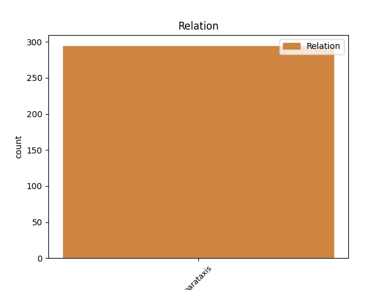
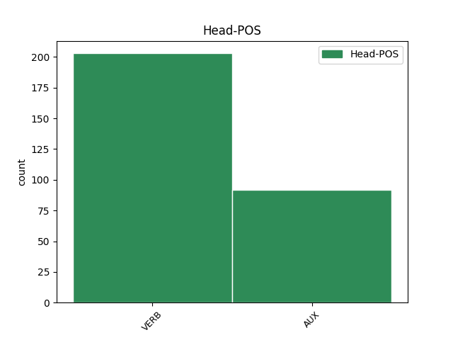
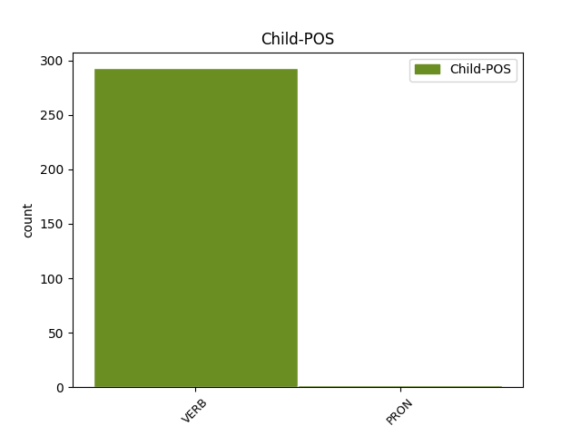

Distribution of features within this leaf



Agreement Rules sorted by frequency.
- When the dependent token is the parataxis(parataxis) of the head token, and the dependent token is VERB.
1 Ok _ _ _ _ 0 _ _ _
2 @user _ _ _ _ 0 _ _ _
3 ho avere AUX VA Mood=Ind|Number=Sing|Person=1|Tense=Pres|VerbForm=Fin 0 _ _ _
4 capito _ _ _ _ 0 _ _ _
5 torno tornare VERB V Mood=Ind|Number=Sing|Person=1|Tense=Pres|VerbForm=Fin 3 parataxis _ _
6 a _ _ _ _ 0 _ _ _
7 fare _ _ _ _ 0 _ _ _
8 esami _ _ _ _ 0 _ _ _
9 per _ _ _ _ 0 _ _ _
10 il _ _ _ _ 0 _ _ _
11 debito _ _ _ _ 0 _ _ _
12 , _ _ _ _ 0 _ _ _
13 torno _ _ _ _ 0 _ _ _
14 a _ _ _ _ 0 _ _ _
15 lavorare _ _ _ _ 0 _ _ _
16 che _ _ _ _ 0 _ _ _
17 è _ _ _ _ 0 _ _ _
18 meglio _ _ _ _ 0 _ _ _
19 ! _ _ _ _ 0 _ _ _
20 #labuonascuola _ _ _ _ 0 _ _ _
1 @user _ _ _ _ 0 _ _ _
2 : _ _ _ _ 0 _ _ _
3 Mario _ _ _ _ 0 _ _ _
4 Monti _ _ _ _ 0 _ _ _
5 e _ _ _ _ 0 _ _ _
6 Sara _ _ _ _ 0 _ _ _
7 Tommasi _ _ _ _ 0 _ _ _
8 sono essere AUX VA Mood=Ind|Number=Plur|Person=3|Tense=Pres|VerbForm=Fin 0 _ _ _
9 usciti _ _ _ _ 0 _ _ _
10 entrambi _ _ _ _ 0 _ _ _
11 da _ _ _ _ 0 _ _ _
12 la _ _ _ _ 0 _ _ _
13 Bocconi _ _ _ _ 0 _ _ _
14 . _ _ _ _ 0 _ _ _
15 Lui egli PRON PE Number=Sing|Person=3|PronType=Prs 8 parataxis _ _
16 a _ _ _ _ 0 _ _ _
17 testa _ _ _ _ 0 _ _ _
18 alta _ _ _ _ 0 _ _ _
19 , _ _ _ _ 0 _ _ _
20 lei _ _ _ _ 0 _ _ _
21 a _ _ _ _ 0 _ _ _
22 90 _ _ _ _ 0 _ _ _
23 ! _ _ _ _ 0 _ _ _
Disagree Examples:
1 Il _ _ _ _ 0 _ _ _
2 #Terzopolo _ _ _ _ 0 _ _ _
3 sembra sembrare VERB V Mood=Ind|Number=Sing|Person=3|Tense=Pres|VerbForm=Fin 0 _ _ _
4 l' _ _ _ _ 0 _ _ _
5 armata _ _ _ _ 0 _ _ _
6 brancaleone _ _ _ _ 0 _ _ _
7 . _ _ _ _ 0 _ _ _
8 Armiamo armare VERB V Mood=Imp|Number=Plur|Person=1|Tense=Pres|VerbForm=Fin 3 parataxis _ _
9 ci _ _ _ _ 0 _ _ _
10 e _ _ _ _ 0 _ _ _
11 partite _ _ _ _ 0 _ _ _
12 ! _ _ _ _ 0 _ _ _
13 #governo _ _ _ _ 0 _ _ _
14 #monti _ _ _ _ 0 _ _ _
15 #oramonti _ _ _ _ 0 _ _ _
16 #pdl _ _ _ _ 0 _ _ _
17 #pd _ _ _ _ 0 _ _ _
18 #udc _ _ _ _ 0 _ _ _
19 #idv _ _ _ _ 0 _ _ _
1 Casini _ _ _ _ 0 _ _ _
2 a _ _ _ _ 0 _ _ _
3 #Grillo _ _ _ _ 0 _ _ _
4 " _ _ _ _ 0 _ _ _
5 che _ _ _ _ 0 _ _ _
6 venga venire VERB V Mood=Imp|Number=Sing|Person=3|Tense=Pres|VerbForm=Fin 0 _ _ _
7 in _ _ _ _ 0 _ _ _
8 parlamento _ _ _ _ 0 _ _ _
9 a _ _ _ _ 0 _ _ _
10 fare _ _ _ _ 0 _ _ _
11 i _ _ _ _ 0 _ _ _
12 conti _ _ _ _ 0 _ _ _
13 con _ _ _ _ 0 _ _ _
14 la _ _ _ _ 0 _ _ _
15 realtà _ _ _ _ 0 _ _ _
16 " _ _ _ _ 0 _ _ _
17 ... _ _ _ _ 0 _ _ _
18 ho avere VERB V Mood=Ind|Number=Sing|Person=1|Tense=Pres|VerbForm=Fin 6 parataxis _ _
19 paura _ _ _ _ 0 _ _ _
20 voglia _ _ _ _ 0 _ _ _
21 dire _ _ _ _ 0 _ _ _
22 che _ _ _ _ 0 _ _ _
23 la _ _ _ _ 0 _ _ _
24 realtà _ _ _ _ 0 _ _ _
25 è _ _ _ _ 0 _ _ _
26 ancora _ _ _ _ 0 _ _ _
27 peggio _ _ _ _ 0 _ _ _
28 ... _ _ _ _ 0 _ _ _
29 #m5s _ _ _ _ 0 _ _ _
1 Mario _ _ _ _ 0 _ _ _
2 Monti _ _ _ _ 0 _ _ _
3 non _ _ _ _ 0 _ _ _
4 è essere AUX V Mood=Ind|Number=Sing|Person=3|Tense=Pres|VerbForm=Fin 0 _ _ _
5 Mosè _ _ _ _ 0 _ _ _
6 . _ _ _ _ 0 _ _ _
7 Diffidate diffidare VERB V Mood=Imp|Number=Plur|Person=2|Tense=Pres|VerbForm=Fin 4 parataxis _ _
8 da _ _ _ _ 0 _ _ _
9 le _ _ _ _ 0 _ _ _
10 imitazioni _ _ _ _ 0 _ _ _
11 . _ _ _ _ 0 _ _ _
1 i _ _ _ _ 0 _ _ _
2 poeti _ _ _ _ 0 _ _ _
3 costruiscono costruire VERB V Mood=Ind|Number=Plur|Person=3|Tense=Pres|VerbForm=Fin 0 _ _ _
4 tweet _ _ _ _ 0 _ _ _
5 su _ _ _ _ 0 _ _ _
6 la _ _ _ _ 0 _ _ _
7 paura _ _ _ _ 0 _ _ _
8 , _ _ _ _ 0 _ _ _
9 paura _ _ _ _ 0 _ _ _
10 da _ _ _ _ 0 _ _ _
11 amare _ _ _ _ 0 _ _ _
12 paura _ _ _ _ 0 _ _ _
13 di _ _ _ _ 0 _ _ _
14 restare _ _ _ _ 0 _ _ _
15 .... _ _ _ _ 0 _ _ _
16 aggiungete aggiungere VERB V Mood=Imp|Number=Plur|Person=2|Tense=Pres|VerbForm=Fin 3 parataxis _ _
17 pure _ _ _ _ 0 _ _ _
18 paura _ _ _ _ 0 _ _ _
19 che _ _ _ _ 0 _ _ _
20 non _ _ _ _ 0 _ _ _
21 ve _ _ _ _ 0 _ _ _
22 la _ _ _ _ 0 _ _ _
23 da _ _ _ _ 0 _ _ _
24 ... _ _ _ _ 0 _ _ _
1 Alfano _ _ _ _ 0 _ _ _
2 : _ _ _ _ 0 _ _ _
3 “ _ _ _ _ 0 _ _ _
4 Con _ _ _ _ 0 _ _ _
5 i _ _ _ _ 0 _ _ _
6 terroristi _ _ _ _ 0 _ _ _
7 agiremo agire VERB V Mood=Ind|Number=Plur|Person=1|Tense=Fut|VerbForm=Fin 0 _ _ _
8 come _ _ _ _ 0 _ _ _
9 con _ _ _ _ 0 _ _ _
10 la _ _ _ _ 0 _ _ _
11 mafia _ _ _ _ 0 _ _ _
12 “ _ _ _ _ 0 _ _ _
13 . _ _ _ _ 0 _ _ _
14 Nascerà Nasciare VERB V Mood=Ind|Number=Sing|Person=3|Tense=Fut|VerbForm=Fin 7 parataxis _ _
15 Forza _ _ _ _ 0 _ _ _
16 Isis _ _ _ _ 0 _ _ _
17 . _ _ _ _ 0 _ _ _
18 [ _ _ _ _ 0 _ _ _
19 @user _ _ _ _ 0 _ _ _
20 ] _ _ _ _ 0 _ _ _